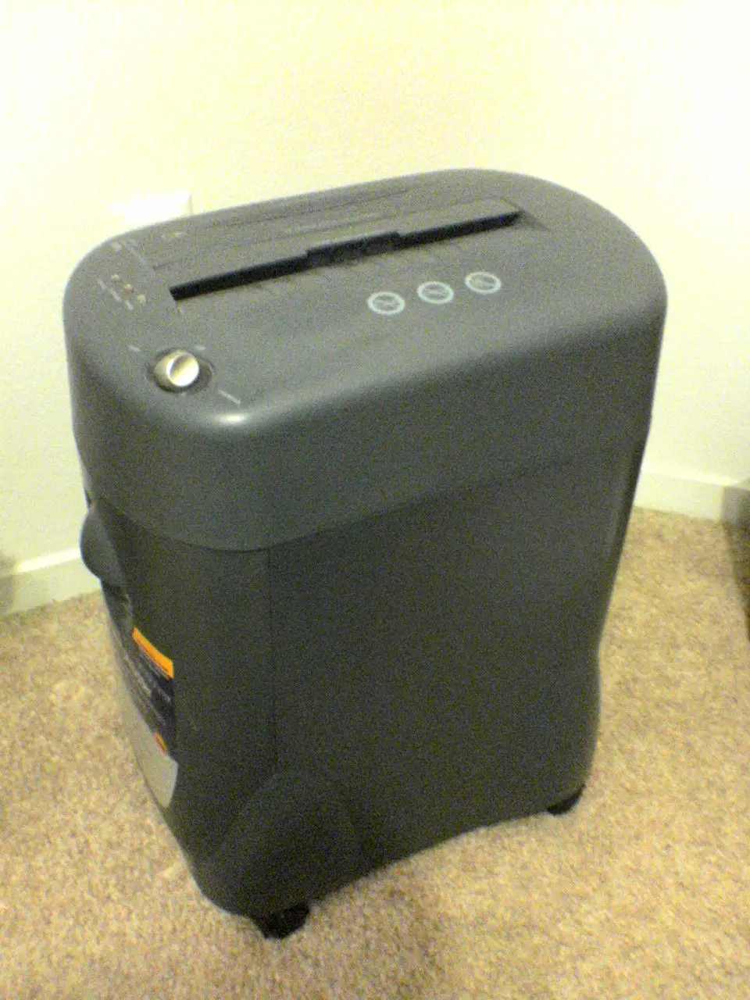

Microsoft 365 on Linux, 2026
Kept on one side, forfeited on the other. Thirteen installed accounts, examined and balanced — and one liability that falls due on 1 October 2026 whether the books are ready or not.
Opinion of the examiner — qualified
Office-on-Linux is a tolerable compromise. It is not a solved problem, and it is not a reason to keep Windows. Eleven of thirteen accounts settle. Two cannot be reconciled at any price.
compromisequalified · 2 exceptions
OneDrive
No first-party client, and no Linux client offers files-on-demand [1]. Worse, tenant policy can block the open-source ones from signing in at all [2].
OneNote
Web-only, and the official Obsidian importer refuses work and school accounts outright [3]. This is an account to close, not to restate.
Thirteen accounts, three columns
Not one of the six impairments is fatal on its own. Two of them — OneDrive and OneNote — are only survivable because you do the work before the wipe.
Every installed account, double-entered
Left column: what the Linux side receives. Right column, in red: what is forfeited in the transfer. Read across, never down.
| № | Account — as installed on Windows | Dr — carried over | Cr — written off | Bal. |
|---|---|---|---|---|
| 01 | ONLYOFFICE Desktop Editors ⭐ 5.1k for anything exchanged with Windows colleagues — OOXML is its native format, not a conversion [9]. LibreOffice 26.2 for your own work and offline heavy lifting. | A native Office for Linux — none exists and none is coming [8]. VBA. The full desktop connector library. | ⚠ | |
| 02 | OneNote for the web is the supported path. P3X OneNote ⭐ 2.1k wraps it in a window and a tray icon [36]. | Any desktop client. Local, non-cloud notebooks — a desktop-only feature [35]. A clean export path for a work tenant [3]. The weakest line in the book. | ⚠ | |
| 03 | Evolution 3.60 with the "Microsoft 365" (Graph) account type [5]. Thunderbird 145+ for mail only [10]. Outlook on the web, always. | The new Outlook itself — Windows-only, with nothing announced for Linux [8]. Pick by protocol, not by looks: EWS dies 1 Oct 2026 [11]. | ⚠ | |
| 04 | The Teams PWA in Edge or Chrome — the officially supported route [12]. teams-for-linux ⭐ 4.9k buys back tray badges, notifications and custom backgrounds. | The supported desktop client — "Teams is no longer supported on Linux" [4]. Reliable notifications. Frictionless screen capture on Wayland. | ⚠ | |
| 05 | Microsoft Teams Meeting Add-in for Microsoft Office version 1.26 |
Nothing. Schedule from Teams or Outlook on the web instead, or use DavMail's CalDAV online-meeting setting [13]. |
The entire add-in. It is an Outlook-desktop COM object and there is no Outlook desktop on Linux [8]; Thunderbird cannot mark an invite as a Teams meeting on its own [14]. | ✗ |
| 06 | m365.cloud.microsoft in any browser. The Office app became the Microsoft 365 Copilot app; office.com and microsoft365.com both redirect there [15]. |
Nothing. | ✓ | |
| 07 | Microsoft.Office.ActionsServer Microsoft.OfficePushNotificationUtility |
— | Nothing of value. Windows-only plumbing for the Office and OneNote apps; it leaves with the suite. | ✓ |
| 08 | Microsoft.OneDriveSync |
abraunegg/onedrive ⭐ 12.7k, rclone ⭐ 59k, onedriver ⭐ 2.5k, or Insync if you will pay. See folio 5. | A first-party client — fifteen years and counting [16]. Files-on-demand in the OSS daemon, listed under "what's missing" [1]; budget the full local disk. And the assumption that your tenant will let any of them sign in [2]. | ⚠ |
| 09 | DropboxInc.Dropbox |
The official Dropbox client for Linux. ext4, zfs, xfs, btrfs and eCryptFS-on-ext4 are all supported [17] — the 2018 ext4-only rule [18] was rolled back in 2019 [19]. | ARM. 64-bit x86 only [17]. Boring, in the good way. | ✓ |
| 10 | The same version, natively. 26.2 landed 4 February 2026 with real Excel-interop work [20]. | Nothing. | ✓ | |
| 11 | The same version, natively: official AppImage, .deb, snap and Flatpak, plus arm64 [21]. Also the likely destination for your notebooks. | Nothing. | ✓ | |
| 12 | [Store] Claude |
Claude Desktop for Linux, in beta since 30 June 2026 for Ubuntu 22.04+ and Debian 12+, with an apt repo [22]. | Computer Use and voice dictation, for now [22]. | ✓ |
| 13 | Microsoft.Copilot |
Any browser, or the unofficial copilot-desktop snap — a community wrapper by Ken VanDine, last updated 9 February 2026 [23]. | An official Microsoft Copilot desktop app for Linux. There is none [23]. | ⚠ |
One obligation falls due in October
This is the only entry in the book with a date attached, and it dominates every other consideration in the mail column. Exchange Web Services is being switched off on a published schedule.
2026
EWS is disabled by default across Exchange Online tenants, and fully shut down on 1 April 2027 with "no exceptions" [11][30].
| Matures | Obligation | Days from 30 Jul 2026 |
|---|---|---|
| 31 Aug 2026 | Last date for an admin to create an EWS allow-list, or the tenant loses EWS on the cutoff [11] | 32 |
| 1 Oct 2026 | EWS disabled by default in Exchange Online [30] | 63 |
| 1 Apr 2027 | EWS completely shut down; Microsoft Graph is the only route [11] | 245 |
Obligations to settle before the Windows account is closed
- Run onenote-md-exporter ⭐ 1.6k while the OneNote desktop app still exists — it drives OneNote → DOCX → Pandoc → Markdown and cannot run without it [37].
- Upload any local, non-cloud notebooks to OneDrive or SharePoint first; the web app has no concept of them [35].
- Test a OneDrive client's sign-in against your actual tenant on day one, before committing. Intune SSO via the Microsoft Identity Device Broker D-Bus interface and the OAuth2 device-authorisation flow are both available if the browser flow is refused [43].
Mail and calendar, valued by useful life
Same six clients everyone lists, sorted by the only thing that matters this quarter: which protocol they speak, and how long that protocol lives.
| Client | Protocol to Microsoft 365 | Cal. / contacts | Useful life | Verdict | |
|---|---|---|---|---|---|
Evolution 3.60 + evolution-ews |
Graph ("Microsoft 365" account type) and EWS | ✓ | ✓ | Indefinite | Best bet. The maintainer, 3 July 2026: preview status ended in the 3.52/3.56 era and "many main pain points had been fixed", but ⚠ "feature parity is not complete" [5]. |
| Thunderbird 145+ | EWS shipped Nov 2025; Graph in progress | ✓ | ✗ | Mail: indefinite EWS path: 63 days |
Exchange email is native and add-on-free [10]. Graph is "entering the final stretch toward feature parity"; calendar is only planned after that [31][32]. |
| Thunderbird + Owl for Exchange | EWS only | ✓ | ✓ | 63 days | €10/yr, syncs calendar and address book, MFA-aware [33]; it also surfaces Teams chat inside Thunderbird [2]. Buying it in July 2026 is buying a wasting asset. |
| Betterbird | Inherits Thunderbird's | ⚠ | ⚠ | Pre-EWS | The stable line is still 140.13.0esr — before Exchange support. The 153 series exists but ships with "do not use this version in production yet" [34]. |
| DavMail 6.8 gateway | Graph or EWS → IMAP / CalDAV / LDAP | ✓ | ✓ | Indefinite | ⭐ 750 — Graph mode is now exposed in the GUI, OAuth2 is mandatory so MFA and Conditional Access work, and it can auto-create Teams meetings via the CalDAV online-meeting setting [13]. |
| Outlook on the web | — | ✓ | ✓ | Indefinite | The zero-risk fallback, officially supported in Firefox and Chrome on Linux [8]. |
One reassuring entry for third-party clients generally: Microsoft told the Thunderbird team that "approved mail clients such as Thunderbird will continue to be able to obtain user consent for permissions that were previously unavailable to third-party applications" [31].
OneDrive: four impairments, pick one
Microsoft "hasn't shipped one in 15 years and probably won't" [16]. Every row below is a write-down of something; the question is which write-down you can live with.
| Tool | Model | SharePoint / Teams libraries | Files-on-demand | Impairment |
|---|---|---|---|---|
| abraunegg/onedrive ⭐ 12.7k | Sync daemon — bi-directional, or upload/download-only, with --dry-run |
✓ Business, SharePoint libraries, shared folders, multi-tenant Entra ID | ✗ explicitly in "what's missing" | CLI-only, no official GUI. Runs on every major distro, FreeBSD/OpenBSD, Docker and Podman [1]. Budget the full local disk. |
| rclone ⭐ 59k | On-demand copy/sync, or mount |
✓ | ⚠ via VFS cache | A mount without --vfs-cache-mode writes or full can only write sequentially and cannot seek on read, so most applications simply will not work against it [39]. |
| onedriver ⭐ 2.5k | FUSE filesystem, download-on-access | ⚠ limited SharePoint support [16] | ✓ this is its whole point | The closest thing to Windows' behaviour. Last commit January 2026 [40] — not dead, not busy either. |
| Insync (paid) | GUI sync | Claims SharePoint + OneDrive for Business | ✗ | ⚠ Conflicting evidence: Insync's own Linux page advertises OneDrive, ODB and SharePoint [41], while a competitor states "Insync used to, dropped support in 2024" [16]. Trial before paying. |
Contingent liability — your tenant, not your tool
abraunegg's app registration shows as an unverified publisher and requests broad delegated scopes — "Edit or delete all site collections", "Have full access to all files user can access" — which is exactly what an administrator blocks [42]. A March 2026 first-hand account of a locked-down organisation: OneDrive sync "remained the major pain point — native Linux clients lack files-on-demand, and the organization blocked both popular open-source solutions from signing in" [2].
Dropbox, by contrast, is boring in the good way: an official client, Ubuntu 18.04+ and Fedora 28+, five supported filesystems, 64-bit only [17]. Nothing to negotiate with anybody.
OneNote: a disposal, not a restatement
There is no Linux client and there will not be one. Five options, worst to best for a work tenant — and only one of them is a real exit.
- Supported, and thinOneNote for the web. ⚠ Local, non-cloud notebooks are a desktop-only feature, so anything not already synced to OneDrive or SharePoint must be uploaded first [35].
- CosmeticP3X OneNote ⭐ 2.1k. An Electron wrapper around the same web app, with locale auto-detection, still actively released in 2026 [36]. Buys window and tray integration, not features.
- Blocked for work accountsMigrate to Obsidian's official importer. OAuth to Microsoft, notebooks become folders, pages become
.md. ⚠ Hard blocker: "Only notebooks owned by your personal account can be imported" — work and school accounts are unsupported, and locked sections stay invisible until unlocked [3]. - The actual exitonenote-md-exporter ⭐ 1.6k. A Windows console app that drives OneNote → DOCX → Pandoc → Markdown, with Joplin and Obsidian output targets [37]. It needs the OneNote desktop app you are about to delete — so it runs before the wipe, not after.
- Do nothingLeave the notebooks in the cloud and read them in a browser. Defensible if you never edit them again; a slow write-off if you do.
Loss on disposal — unavoidable in any export
Password-protected sections are skipped unless unlocked first [38].

Teams: the recurring charges
Microsoft's admin doc now lists Linux as ❌ "Teams is no longer supported on Linux", with Web as ✅ on Edge, Chrome, Firefox and Safari [4]. The PWA is a feature of the web client, not a separate app [12]. These are the charges you pay for that, and how often.
Silent notifications, toasts that self-delete after about five seconds, missing "meeting started" alerts — a long-running Microsoft Q&A thread and the single most-reported daily annoyance [28].
Wayland capture needs the whole stack: an xdg-desktop-portal backend for your compositor, PipeWire running, and the app pointed at the portal capture path [24]. Concretely in 2026: on Ubuntu 26 with GNOME/Wayland, teams-for-linux's snap build fails ScreenCast ("Bind context provider failed") while the .deb works — snap confinement, not code [25].
Blur and the built-in set work; uploading a custom background is limited in the Linux PWA [26], and Fedora users report the filters failing outright [27].
Gone entirely — see journal entry 05. Schedule from Teams itself or Outlook on the web.
Offsetting credit — and what it costs
teams-for-linux ⭐ 4.9k buys back system notifications, a tray with badges, custom backgrounds, screen sharing and multi-account profiles. The price: it is an Electron wrapper of the same web app, it disables contextIsolation and sandboxing to reach the Teams DOM, and it is explicitly unaffiliated with Microsoft [29]. The community verdict on capture, meanwhile, favours the plain PWA in Chrome or Edge over any Electron wrapper [24].
Against all of that, one first-hand 2026 report from a locked-down Microsoft-everything organisation calls a Teams flatpak wrapper "exactly the same as on windows" in function [2].
Valuation of file fidelity
Three engines, three valuations. Note that the two columns which used to decide this — VBA and Power Query — no longer move together.
| Engine | .docx / .xlsx / .pptx round-trip | VBA | Power Query |
|---|---|---|---|
| Office for the web | Reference-perfect — it is Office | ✗ "Macros do not run in a browser window"; ActiveX and form controls do not render; workbooks with workbook-level IRM or digital signatures will not open at all [44] | ✓ Full editor since January 2026 — view and refresh for all Microsoft 365 subscribers, authoring on Business and Enterprise plans [6]. ⚠ Desktop still wins on local-file sources, the full connector library and heavy M work [7] |
| ONLYOFFICE Desktop Editors ⭐ 5.1k | Best offline OOXML fidelity — OOXML is its internal format, so .docx/.xlsx/.pptx are not a conversion at all | ✗ Macros are sandboxed JavaScript against the Document Builder API; VBA is unsupported by design, for security [9][45] | ✗ |
| LibreOffice 26.2 | Good and improving: Excel 2010–365 is now the default XLSX export target, BIFF12 clipboard support removes paste size limits, plus floating-table DOCX interop and partial OOXML chart-style round-tripping [46][20] | ⚠ Partial: "Support for VBA is not complete, but it covers a large portion of the common usage patterns". Needs Tools ▸ Options ▸ Load/Save ▸ VBA Properties ▸ Executable code, and you "may have to edit the VBA code and complete the missing support with LibreOffice Basic" [47] | ✗ |
Recommended accounting policy
ONLYOFFICE for files you exchange with Windows colleagues. LibreOffice for your own work. The web app whenever a document must come back byte-faithful. Office Watch's 2026 verdict on the open-source suites is the honest one: fine for everyday documents, but "once you start dealing with complex Word layouts, large Excel models or macro-heavy files, compatibility gaps become obvious" [8].
Three entries that need explaining
Four languages in, one UI language out
The Office install is four-locale (en-us, nl-nl, plus de-de and fr-fr for OneNote), and almost nothing here is lost: LibreOffice UI and dictionaries are per-package (libreoffice-l10n-nl, -fr, -de on Debian/Ubuntu, libreoffice-langpack-* on Fedora), switchable under Tools ▸ Options ▸ Language Settings ▸ Languages [48]. P3X OneNote added an "Auto (system)" language option in 2026 [36], and Office for the web follows the account language, not the OS. What you do forfeit is having four locales resident at once with per-document proofing switching — on Linux that becomes one UI language plus N dictionaries.
VBA does not survive anywhere on Linux
Partially in LibreOffice [47], not at all in ONLYOFFICE by design [45], and not at all in the browser [44]. There is no third option: rewrite it, or keep a Windows VM for the workbooks that need it.
Power Query stopped being a platform question
As of January 2026 the full import wizard and editor are in Excel for the web [7]. Whether you can author queries now depends on your licence tier, not on your operating system [6] — which is a materially better position than this angle would have reported six months ago.
What still argues for a Windows VM
Three items, none of them a daily driver
OneNote export — run onenote-md-exporter before wiping [37]. VBA-heavy workbooks. And the Teams Meeting add-in workflow, if your calendar habits are genuinely built on it.
The honest counter-view belongs in the accounts too: Office Watch rates a Windows VM the "best for power users" option precisely because feature parity is otherwise unattainable — at the cost of a licence and the resources to run it [8].
Forty-eight sources, in order of entry
- 01
github.com/abraunegg/onedriveofficial
- 02
peterfalkingham.com/2026/03/04/office-365-a…forum
- 03
obsidian.md/help/import/onenoteofficial
- 04
learn.microsoft.com/en-us/microsoftteams/te…official
- 05
discourse.gnome.org/t/is-microsoft-365-grap…forum
- 06
support.microsoft.com/en-us/office/use-powe…official
- 07
acuitytraining.co.uk/news-tips/power-query-…news
- 08
office-watch.com/2026/microsoft-office-linuxnews
- 09
api.onlyoffice.com/docs/macros/guides/getti…official
- 10
blog.thunderbird.net/2025/11/thunderbird-ad…vendor blog
- 11
computerworld.com/article/4129036/after-yea…news
- 12
techcommunity.microsoft.com/blog/microsoftt…vendor blog
- 13
windowsforum.com/threads/davmail-6-8-adds-a…forum
- 14
support.mozilla.org/en-US/questions/1384944forum
- 15
- 16
expandrive.com/blog/onedrive-and-sharepoint…vendor blog
- 17
help.dropbox.com/installs/system-requiremen…official
- 18
itsfoss.com/dropbox-linux-ext4-onlynews
- 19
linuxreviews.org/Dropbox_will_again_support…wiki
- 20
blog.documentfoundation.org/blog/2026/02/04…vendor blog
- 21
- 22
omgubuntu.co.uk/2026/07/claude-desktop-linu…news
- 23
snapcraft.io/copilot-desktopofficial
- 24
botmonster.com/self-hosting/wayland-screen-…forum
- 25
- 26
- 27
discussion.fedoraproject.org/t/microsoft-te…forum
- 28
- 29
- 30
- 31
- 32
roadmaps.thunderbird.net/en-US/desktopofficial
- 33
cylab.be/blog/463/use-thunderbird-to-fetch-…forum
- 34
betterbird.euofficial
- 35
en.ittrip.xyz/microsoft-365/onenote-desktop…news
- 36
- 37
- 38
file2markdown.ai/blog/onenote-to-markdownnews
- 39
rclone.org/commands/rclone_mountofficial
- 40
- 41
insynchq.com/linuxofficial
- 42
- 43
- 44
- 45
onlyoffice.com/blog/2026/02/macros-or-ai-fu…vendor blog
- 46
- 47
help.libreoffice.org/latest/en-US/text/sbas…official
- 48
libreofficehelp.com/install-language-packs-…forum
The other folios in this audit
This folio covers one angle of the full inventory audit — 185 programs across seven angles. The others:
Entered 30 July 2026 against an inventory of software actually installed on one Legion laptop. Eleven accounts settle, six of those with an impairment worth knowing about; two — OneDrive and OneNote — do not settle at all. The books balance only if the pre-wipe obligations on folio 3 are discharged first, and the note falling due on 1 October 2026 is not negotiable.